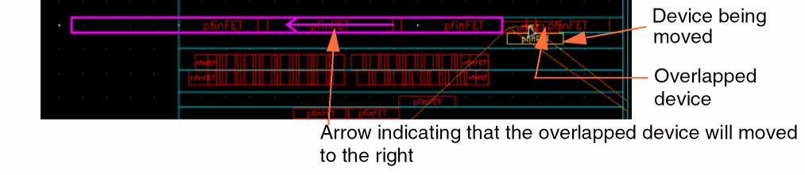

3
Performing Design Placement
The Virtuoso Placer supports two placement types - automatic and assisted.
- Automatic placement is performed by the Virtuoso Placer.
-
Assisted placement is the process of placing devices semi-automatically. Depending on the complexity of your design and your placement needs, you can choose to perform complete assisted placement of your design or use the assisted placement options to refine the placement after running the Virtuoso Placer.
Assisted placement options are available under the Place menu and on the Assisted tab of the Placement Options form.
The topics covered in this chapter are:
The chapter also includes the following sections:
Setting Placement Options
You can use the options in the Placement Options form to customize the assisted and automatic placement features.
To display the Placement Options form, select Place – Placement Options.
The Placement Options form has the following three tabs:
- Assisted, which provides options for assisted move commands and specifies assisted placement settings. This tab is displayed by default. For more information, see Assisted Placement Options.
- Automatic, which specifies automatic placement settings. For more information, see Automatic Placement Options.
- Common, which includes options that are relevant for both assisted and automatic placement. For more information, see Common Options.
Both, assisted and automatic placement methods support snapping of individual objects and object groups to grids. For more information, see Snapping Behavior.
Virtuoso Placer honors the Net Priority routing constraint set on nets. The Net Priority constraint defines the order of priority when routing a net. You can specify the priority of nets in the -128 to 128 range, where -128 is the lowest priority. The higher the priority, the closer the placer places the instances attached to the associated net.
Assisted Placement Options
When you open the Placement Options form, the Assisted tab is displayed by default.
Use the options on this tab to perform the following tasks:
Assisted Placement
The Assisted Placement section provides the following advanced assisted features:
- Snaps single instances, chains, figGroups, mosaics, and Modgens to rows and snap patterns in real time. When multiple instances are moved simultaneously, each instance is snapped individually to the row over which it is moved, while honoring the existing row attributes. For more information about moving multiple instances, see Moving Multiple Instances.
- Places single devices that are (incrementally) generated in the layout view using Connectivity - Generate - Selected From Source.
- Lets you remove overlaps post-edit and choose the direction in which devices should be moved to resolve overlaps.
- Enables constraint-aware editing.
- Supports transparent mode and edit in place.
-
Lets you choose the order in which devices are abutted.
When Enable is selected in the Assisted Placement section, instances are snapped to the nearest rows instead of grids, as shown below:
When instances are moved with Enable selected, you can see an info balloon that displays the following information. Use either the Show Info Balloon option, or the infoBalloon environment variable to control the display of info balloon. The option is selected by default.
In the Constraint-Aware Editing (CAE) mode, instances that lie outside the cluster boundaries are highlighted. An arrow indicates the respective cluster boundary, and the cluster violation count is displayed in the info balloon. For more information, see
The displaySnappedInfo environment variable controls the display of snapping information in the info balloon.
Snapping behavior is based on the row definition in the row template and also applies to Modgens, mosaics, and figGroups. For more information about the snapping behavior of Modgens, see Support for Module Generators.
Moving Multiple Instances
You can select and move multiple instances simultaneously. Each instance is snapped to rows in real time, while honoring the row attributes. Consider a design with two row regions, each with different type of rows:
- Top Region: Rows have been generated using the Mixed row template. This template comprises two row types with similar definitions. They can contain standard cells, PFIN devices, and NFIN devices. The NFIN devices are aligned to the bottom, while the PFIN devices are aligned to the top. The PFIN devices have a mirrored orientation.
-
Bottom Region: Rows have been generated using the deviceRow row template, which has a single row type. The row can contain PFIN and NFIN devices. All devices are bottom aligned. All device orientations are supported.
The following graphics depict the snapping behavior of individual devices when two PFIN and NFIN devices are moved:
Resolve Overlaps
Select Resolve Overlaps to automatically resolve any overlaps resulting from moving devices in a design. An arrow indicates how the overlap will be resolved if an instance is moved in a particular way. The device being moved is placed at the target location, and the overlapped device (at the target location) is moved to a new location.
Resolve Overlaps lists the following modes that specify the direction in which the overlapping device should be moved:
- Spread Any Direction (default): In this mode, the overlapped device is moved by the minimum distance in any direction. The example shown above depicts such a move.
-
Spread X-Direction Only: In this mode, the overlapped device is moved by the minimum distance to the right or left within the same row as indicated below:
 -
Insert Mode: In this mode, the devices being moved are placed sequentially by row. If more than one device is being moved, the relative positions of the devices are maintained while placing them at their new locations. The overlapped devices are moved only to the right, as shown below:
-
Insert Mode Single Row: In this mode, the devices that are moved are all placed sequentially in the same row. The overlapped devices are moved to the right as shown below:
-
Insert Mode Single Column: In this mode, the devices that are moved are all placed sequentially in the same column. The overlapped devices are moved to the right as shown below:
Abut Rows Use Device Order
Select Abut Rows Use Device Order to abut instances in the same order in which they are placed in each row.
If selected, then an extra dummy poly is inserted between the two instances to allow abutment. To avoid this, clear the check box. The devices are then reorganized to achieve a more compact abutment chain.
Automatic Placement Options
Virtuoso Placer performs automatic placement by choosing appropriate locations for all instances.The options must be set on the Automatic tab before Running the Automatic Placer. These options can also be accessed by clicking the More Options button in the Automatic Placement form. The Automatic tab includes options that are generic as well as those that are specific to the Custom Digital placement type.
Use the options on this tab to perform the following tasks:
- Apply Design Rules
- Specify Device Settings
- Define Standard Cell Settings
- Apply Pin Placement Settings
- Define Passive Device Settings
Apply Design Rules
The options in the Rules section are generic, and apply to all design types. Choose a Constraint Group from the drop-down list, which specifies the spacing rules to be applied while running the automatic placer. Minimum Boundary Offset specifies the minimum spacing required between the selected reference layer and the PR boundary.
Specify Device Settings
The options in the Devices section are applicable only to analog designs. For more information, see Running the Automatic Placer. The Devices section includes:
-
Abutment Options - You can choose to Abut Devices so as to create abutment chains in each row. Preserve Abutment preserves any existing abutment chains in the design.
-
Grouping Options - Choose Group M Factor Devices to create a cluster containing all complementary MOS devices in the design that have a multiplication factor in the schematic.
Similarly, you can Group CMOS Pairs that share gate connections. All such CMOS device pairs in the design that have been generated with chaining enabled are grouped together into a cluster.
Select Group P Over N to place all P-type devices at the top and N-type devices at the bottom of the selected region.
Define Standard Cell Settings
The options in the Standard Cells section are applicable only to digital designs, and therefore apply only to the Custom Digital placement type in the Automatic Placement form. For more information, see Running the Automatic Placer. The Standard Cells section includes:
- Spacing Options: Select Run Spacer Within Rows to distribute standard cells evenly in the rows by adding or removing space between standard cells within each row.
- Tap Cells Options: Use the options in this section to Insert Tap Cells in rows based on the specified Minimum Spacing and Maximum Spacing values. Specify the Component Type that contains the substrate contacts (tap cells) to be used. The specified component type must have the component class STDSUBCONT.
Apply Pin Placement Settings
The options in the Pins section are generic, and so are applicable to all design types.
The Routing Direction Aware Pin Placement option is applicable to designs with width spacing patterns (WSPs). If selected (default), the placer considers the WSP direction while placing unconstrained pins. For vertical WSPs, pins are placed along the left and right edges; for horizontal WSPs, pins are placed along the top and bottom edges.
You can choose to place all Pins on Boundary during placement.
Define Passive Device Settings
The Passive to Outside option is generic, and applicable to all design types. Selecting this option pushes large capacitors and resistors to the edge of the PR boundary, thereby separating them from the transistors in the design.
Common Options
The Common tab provides options common to both Assisted and Automatic placement.

The Common tab is divided into: General, Modgen, Device, and Standard Cell sections.
-
Select Width Spacing Pattern (WSP) Snapping to enable width-aware and constraint (CST)-aware snapping of instances and pins. Both interactive and automatic placers recognize the width spacing snap pattern grid that is defined using the
widthSpacingSnapPatternDefrule in the technology file. ThewidthSpacingSnapPatternDefdefinitions are available in the technology database as well as in the design. For more information, see the Width Spacing Pattern Layer Rules section in Virtuoso Technology Data ASCII Files Reference.
WSP snapping is possible only when the specified constraints, such as theminwidth,allowedWidthRanges, andsig type, are met. If a constraint is not met, for example, if the pin width is less than the width specified with theminWidthconstraint, the next track is checked. -
Specify a list of Cell Boundary LPPs used to derive the cell boundary for standard cells and devices when running Place Like Schematic, Analog Placer, and Digital Placer. Only the shapes on the listed LPPs are considered when deriving the boundary.
Example:(Metal1 drawing).
-
Select Update MODGENS to Rows Post-Placement to regenerate Modgens after they are moved to a row region. The orientations of the Modgen members are updated to match the orientations of the rows to which they are moved. For example, a Modgen member instance with orientation
R0is moved to a row with orientationMX. The Modgen is regenerated and the orientation of the instance is changed toMX.
- Specify the N-Diffusion Spacing and P-Diffusion Spacing values, which set the minimum spacing required between adjacent NMOS and PMOS chains, respectively.
- You can choose to enable Context Aware Placement. Standard cells are placed such that each cell is aware of the context of the neighboring cell and supports placement in accordance with the EDGETYPE and CELLEDGESPACINGTABLE LEF5.8 constraints, which are either defined in the technology and macro LEF, or provided using an XML file. By default, this option is switched off. You can also specify a Context File, which is an XML file containing the edge spacing constraint information for performing context-aware placement. During context-aware placement, the placer honors the edge types and spacing constraints of tap cells.
-
Select Pin Density Aware Placement to consider the pin densities of standard cells while optimizing placement and improving routability. The assisted placement options are also pin density-aware. The pin density consideration can result in larger spacing between the placed standard cells.
- Select Maximize Pin Access to increase the number of WSP tracks that overlap the pins on standard cells. Selecting this option improves routability by providing more access points to the router. Specify the Minimum Pin Access Count, which refers to the minimum number of access points that should be available.
-
In the Cell Padding Value field, specify the space to the left and right of the master. Use the following syntax to enter values in this field:
"(cellName"
Example:
"(nand4 2.5 2.5) (inv 0 1)"
Here, spacing of2.5is applied to both sides of cellnand4. For cellinv, spacing0is applied to the left side and spacing1is applied to the right side.
Running the Automatic Placer
The automatic placer places devices in rows defined in the layout canvas. For best results, run the automatic placer after performing Placement Planning. You can use the automatic placer for placing devices, standard cells, or a mix of both. During placement, these devices are snapped to appropriate rows and grids. For more information about the snapping, see Snapping Behavior.
You can use assisted placement to further refine the placement to achieve the desired result. For more information about these options, see Setting Placement Options.
The automatic placer supports placement of virtual figGroups. For more information, see Placement of Virtual FigGroups.
-
Select Place – Auto Place. The Automatic Placement form is displayed.

-
Depending on your design type, choose one of the following placement types:
-
Custom Digital: Useful for placement in designs that have a higher proportion of standard cells; for example, designs with around 80% standard cells and 20% devices. A precise placement of the devices can also be achieved when devices have matched gates or are connected to the same net.
Selecting Custom Digital performs a complete initial placement of all the devices in the design. Select Eco to incrementally place any unplaced devices in the design.Master filter definitions are honored while placing standard cells. For more information about master filters, see Defining Component Types and Rails. -
Like Schematic: Optimizes for wire length, area, and spacing patterns by placing instances as per their relative positions in the schematic design. Use the likeSchematicTolerance environment variable to specify the tolerance level. Larger tolerance levels allows the placer to use more approximate schematic correspondence to improve the placement. Valid values are
1through1000.
Choose a placer depending on which device type is the majority in your design. If there are more standard cells, use custom digital. -
Custom Digital: Useful for placement in designs that have a higher proportion of standard cells; for example, designs with around 80% standard cells and 20% devices. A precise placement of the devices can also be achieved when devices have matched gates or are connected to the same net.
-
Select one of the three Effort levels from the Options section - Low, Medium, and High.
The runtime of the placer and quality of results depend on the effort chosen. The time for each effort level increases in roughly linear increments. Selecting Low results in a comparatively less precise, but quick placement. Selecting High results in the best placement results, but takes more time than the Low and Medium effort levels.
Try the Low effort level first, because many designs perform well at this level. Low effort level is best suited for regular, structured designs with no wells through the center of the cell and non-conformal group boundaries.
However, if your design is less structured or includes a large number of constraints, try running the design at the Medium effort level. You might also consider this effort level if you have a few conformal group boundaries and wells under placer control.
If a design fails to meet your expectations at Medium effort, then increase the effort level to High. High effort utilizes the same algorithms as Medium, but exerts itself more fully on each step of the process. The default is Medium. -
If a restricted placement is desired, select the Boundary within which the placer must be run. Instead of the default PR boundary, choose a cluster boundary or a row region boundary, if available. If you select a non-PR boundary, Adjust PR Boundary is inactive.
-
Choose Adjust PR Boundary to run the placer unconstrained by the existing PR boundary.
The devices and standard cells are placed so as to achieve better QoR and wire length. After placement, the PR boundary is adjusted accordingly.
The following images depict the difference between placement with and without Adjust PR Boundary selected:
The design is compacted on each subsequent run, and therefore the total area, wire length, and space between devices keeps decreasing with each run. - Choose Selected Only to restrict placement only to the selected devices. This option is useful in situations where you have added new devices or edited existing devices after running the placer.
-
Click More Options to display the Placement Options form. Use the options on the Automatic and Common tabs to further customize placement settings. The form includes options that are generic as well as those that are specific to the Custom Digital placement type. For more information about these options, see Placement Options.

- Click OK or Apply to run the placer.
Placement of Virtual FigGroups
Virtuoso Placer supports placement of virtual hierarchies in the Custom Digital and Like Schematic modes.
By default, virtual figGroups are placed as is. The contents of the virtual hierarchy are placed within the rectangular or rectilinear area boundary of the virtual hierarchy. The instances inside the figGroups are not modified.
If a virtual figGroup is frozen, the instances inside it are not modified. The entire figGroup is placed as a unit. The placer does not break any synchronous clones that exist in a design.
When Adjust PR Boundary is selected in the Automatic Placer form, the boundaries of virtual hierarchies are padded based on the value of the
After placement, whenever a stretch or chop operation is done on the area boundary of a virtual hierarchy, the Like Schematic placer is automatically called to ensure all the contents of the virtual hierarchy are placed within the new areaBoundary, which can be either rectangular or rectilinear.
Viewing the Placement Report
The Placement Statistics report is generated dynamically in the CIW as you run the automatic placer. The report provides the following information:
The Placement Statistics report displays the following information:
- Before running the automatic placer: A summary of the placement parameters in the current design.
-
After running the automatic placer:
-
Placement Parameters: A list of the number of placeable, locked or fixed, temporarily locked, and unplaceable components.
- Placement Results: Summary of the initial placement and the final placement achieved, followed by a list of errors and warnings (if any). The number of spacing and overlap violations is also listed.
-
Placement Parameters: A list of the number of placeable, locked or fixed, temporarily locked, and unplaceable components.
Performing Assisted Placement
After running Automatic Placer, you might want to perform a few manual edits to some of the placed instances to improve their placement.
Start with assisted move to group devices with similar masters and similar finger lengths. No device should be adjacent to another dissimilar device. Additionally, ensure that the devices are ordered top to bottom in a manner that maintains the path of the current from the power rail to the ground rail.
After you have grouped the devices by type, run any of the several assisted commands to improve placement. Assisted placement commands include abutting devices, swapping devices or groups of devices, resolving overlaps, and snapping devices to grids or rows, and adjusting the boundary. Ensure that you press Ctrl+D to deselect all devices, and then carefully select only the ones you need before running an assisted placement command.
The Place menu provides the following assisted placement options:
- Resolve Overlaps: Resolves overlaps between devices in rows, which removes any shorts that are created when you move the devices or snap them to rows.
- Abut Instances: Abutting devices helps avoid loss of area consumed by the extra poly fingers on either side of each device. You can abut selected or all instances in a design. If there are no instances selected before running the command, all instances in the design are abutted. The Placement Options form includes the Abut Rows Use Device Order option, which specifies whether abutment should follow the order in which instances were placed in each row.
- UnAbut Instances: Unabuts selected or all instances in the design. If no instances are selected, then all instances in the design are unabutted
-
Swap Instances: Swaps the position of the selected instances, chains, and figGroups. To swap instances:
The locations of the selected instances are switched, but their orientations are retained as in their initial position.
You can also select the components first and then choose Place—Swap Instances. After selecting the command, pressF3to display the Swap Components form.
In this form:- Use the Swap Origin option to specify the position to which the instance needs to be moved. This option is useful when there is a difference in the sizes of the instances to be swapped.
- You can choose to Resolve Overlaps while placing the devices at their new locations.
- Choose Fix swapped objects during overlap resolution to ensure that the position of the swapped device is not changed while resolving overlaps.
Related Environment variables: highlightPotentialSwap, highlightPotentialSwapColorFor information about the generic swap command (that is available in the non-advanced node releases), see Swapping Components in Virtuoso Layout Suite XL User Guide. -
Swap Rows: Swaps components of the rows that contain the selected instances, chains, or figGroups. Contents of the two rows have to be compatible to be swapped to the new row.
Boundary cells are ignored during row swapping. Locked instances, highlighted in red in the design canvas, are also ignored. All other cells in the selected row are swapped. - Snap to Grids/Rows: Snaps instances to their nearest compatible rows in a Spacing Pattern (SP) or Width Spacing Patterns (WSP)-correct manner. This option is intended as a batch alternative to the assisted move commands. For more information, see Assisted Placement.
-
Adjust PR Boundary: Adjusts the PR boundary to enclose all placed instances. Unused rows are deleted, unused space is chopped, and the PR boundary is adjusted accordingly without disturbing the placement.
Support for Transparent Group Mode
The assisted placement options support the transparent group mode. In this mode, you can select and edit individual members of user-defined groups at the top-level, while retaining them as members of their respective groups. You can edit objects in nested groups also at the top-level, without performing multiple Edit In Place operations. With Resolve Overlaps selected, the user-defined group instances that are at the same level as the selected member instance interact as individual members. Other groups, which are at the same or different levels, behave as groups.
For more information about the transparent mode, see
Snapping Behavior
Assisted and automatic placement methods support snapping of individual objects and object groups to grids based on the following priority:
- Snap to a row region. For more information, see Creating Rows.
- Snap to a WSP grid. For more information, see Using Width Spacing Patterns in Virtuoso Width Spacing Patterns User Guide.
- Snap based on the leSnapGridHorizontal and leSnapGridVertical properties.
- Snap based on the leSnapPatternSnapping property.
- Snap based on setting of the snapPatternSnappingMode environment variable.
Controlling the Rotation of Object Groups During Placement
The snapping behavior is impacted by the allowRotationFigGroup environment variable setting. This environment variable controls the rotation of certain complex object group types. By default, the environment variable is set to nil, which means that their orientation is considered fixed, and therefore they cannot be rotated during placement. For example, if the rows in a design are interposed with orientations R0 and MX, a figGroup with orientation R0 can be snapped only to every other row that has a matching orientation.
F3.
When allowRotationFigGroup is set to t, the orientations of object groups are unlocked. During placement, these objects are rotated such that their orientations match their row orientations.
Support for Module Generators
When you run Virtuoso Placer, Modgens are automatically snapped to compatible rows, if they exist. If the Modgen instances do not align exactly to the rows, then one of the Modgen instances is snapped to the nearest row. Use the snapFigGroupRowCorrect to control the snapping behavior of Modgens.
Modgens that are created after the rows exist are automatically correct by construction, as shown below:

Support for Modgen On-Canvas Commands
You can use the various Modgen on-canvas commands that are available under the Place – Modgen menu to perform simple editing operations directly in the layout editor without invoking the Modgen Editor. For example, you can use the Split Modgen Rows and UnSplit Modgen Rows commands to ensure that Modgens use as few rows as possible, while still fitting comfortably inside the PR boundary.
For more information about these Modgen on-canvas commands, see
Support for Modgen Pattern Editors
The Grid Pattern Editor (GPE) and Grid Pattern Mapping (GPM) assistants are available on-canvas. The Modgen grids directly map to the rows in the layout canvas. Therefore, whenever you make changes to the grid pattern, the Modgen instances always snap to the nearest rows.
For more information about the pattern assistants, see
Inserting Space within Modgens
The alignment and spacing settings defined for the rows override the Modgen alignment and spacings settings made using the Set Member Alignment and Spacing form. Therefore, in the Virtuoso Placer flow, it is recommended that you do not use this form for making vertical alignment and spacing settings.
If you want to create an empty space within a Modgen, use the GPE to create an empty row, as shown below:

For more information about alignment and spacing settings in Modgens, see
Using Guard Rings
In the Virtuoso Placer flow, it is recommended to use either identical guard rings or MPP guard rings. Fluid guard rings can be created, but they are not compatible with the row infrastructure.
For more information about creating guard rings, see
Supported Properties
leSnapGridHorizontal
leSnapGridHorizontal stringf_pitchf_offsetf_offsetFlippedOrientation
Defines a horizontal grid to snap devices, standard cells, block-level cells, and passives with orientations R0, MY, or R180. You can define this property either on the cell master or as an optional override on the instance.
- f_pitch: Specifies the grid pitch.
- f_offset: Specifies the grid offset.
- f_offsetFlippedOrientation (optional): Specifies the offset for instances with flipped orientations. If not specified, the value is considered to be equal to f_offset.
The lower-left corner of the instance PR boundary is considered the reference for instance snapping. In the absence of a PR boundary, the instance origin is the reference.
Example
dbCreateProp(master_cellView "leSnapGridHorizontal" "string" "3 5 1")
;; Override the master’s property
dbCreateProp(instance "leSnapGridHorizontal" "string" "4 5 1")
leSnapGridVertical
leSnapGridVertical stringf_pitchf_offsetf_offsetFlippedOrientation
Defines a vertical grid to snap devices, standard cells, block-level cells, and passives that have their orientations set to R0, MX, or R180. You can define this property either on the cell master or as an optional override on the instance.
- f_pitch: Specifies the grid pitch.
- f_offset: Specifies the grid offset.
- f_offsetFlippedOrientation (optional): Specifies the offset for instances with flipped orientations. If not specified, the value is considered to be equal to f_offset.
For more information, see leSnapGridHorizontal.
Example
dbCreateProp(master_cellView "leSnapGridVertical" "string" "3 5 1")
;; Override the master’s property
dbCreateProp(instance "leSnapGridVertical" "string" "4 5 1")
leSnapPatternSnapping
leSnapPatternSnapping string { off | detail | abstract { f_offset | f_vOffset f_Offset } }
Lets you enable the Manual Mode Placement override and specify the placement mode or offset on a per instance or master basis. You can set the leSnapPatternSnapping property on the instance, master, or both. When set on both, the instance definition overrides the master definition.
-
off: No automatic snapping. -
detail: Force Detail Mode Placement. -
abstract: Force Abstract Mode Placement. - f_offset: Force Abstract Mode Placement with manual offset for either one or both directions along which snapping is done.
- f_VOffset f_Offset: Force Abstract Mode Placement with separate manual offsets. The first number indicates the vertical offset (for example, fin grid) and the second number refers to the horizontal offset (for example, poly grid).
Example
leSnapPatternSnapping "detail"
leSnapPatternSnappingHorizontalGrid
leSnapPatternSnappingHorizontalGrid cyclic poly_grid_name
Specifies the horizontal reference grid to snap instances. The specified grid overrides all active snap patterns (SPs) or width spacing patterns (WSPs). If the reference grid is an SP, detailed snapping is done. If it is a WSP, period snapping is done.
Example
leSnapPatternSnappingHorizontalGrid "analog_poly_nom"
leSnapPatternSnappingVerticalGrid
leSnapPatternSnappingVerticalGrid cyclic poly_grid_name
Specifies the vertical reference grid to snap instances. The specified grid overrides all active SPs or WSPs. If the reference grid is an SP, detailed snapping is done. If it is a WSP, period snapping is done.
Example
leSnapPatternSnappingVerticalGrid "analog_poly_nom"
Return to top